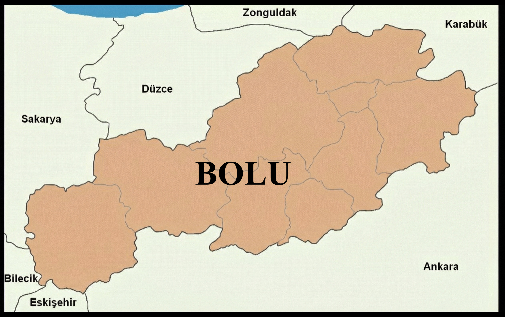
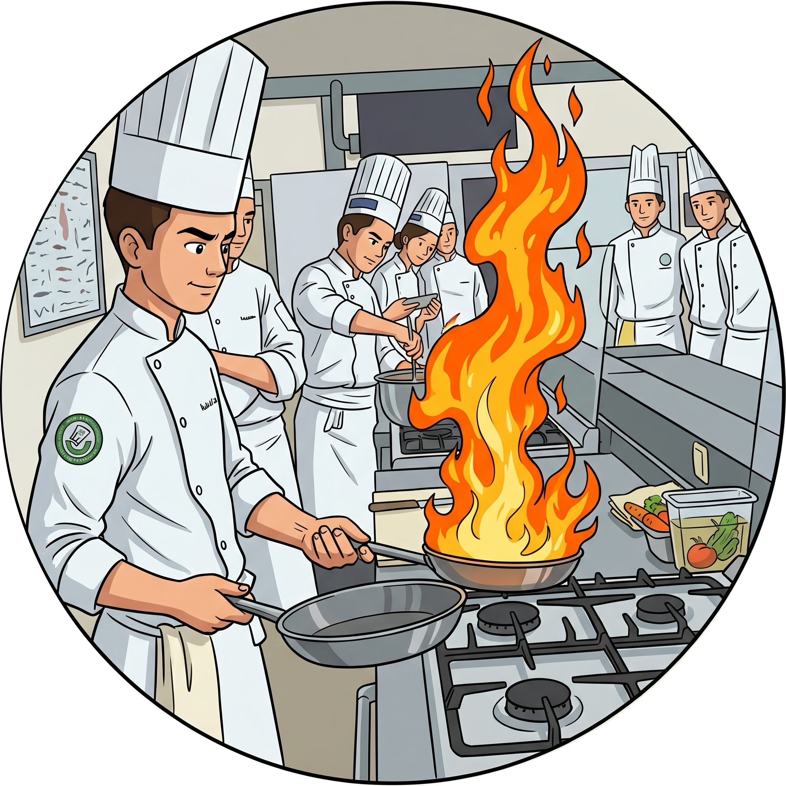
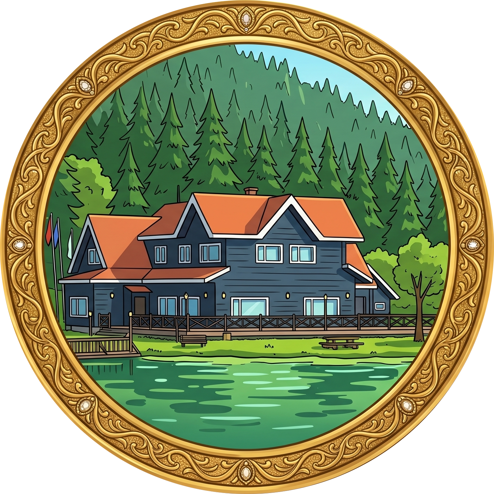
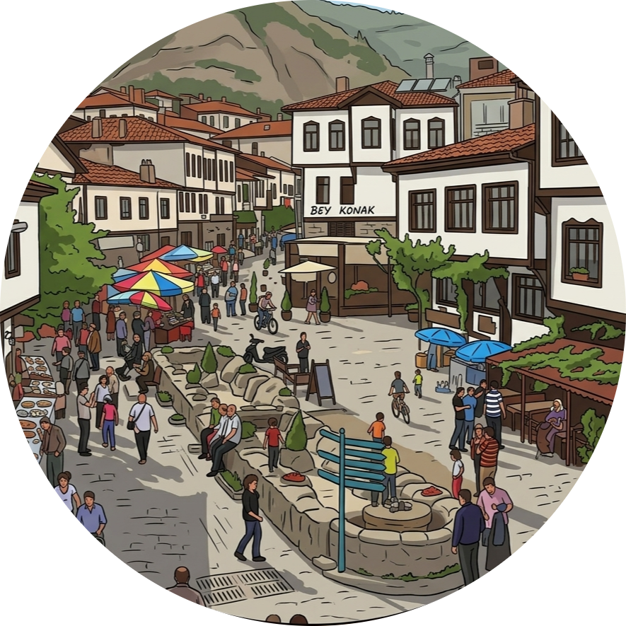
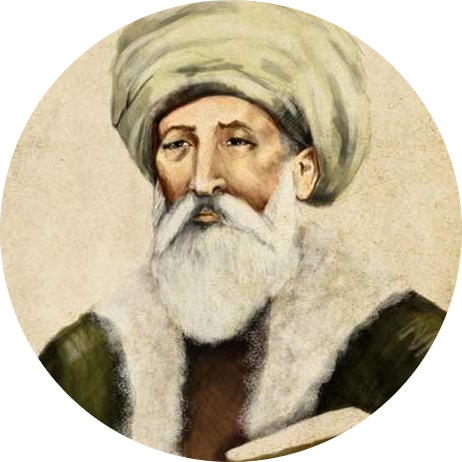

Bolu'nın Kültürel ve Doğal Zenginlikleri
Ana Sayfa
Haritadaki ikonlara tıklayarak Bolu'nun eşsiz lezzetlerini, muazzam doğasını ve manevi mirasını keşfedebilirsiniz. 🌲

Mengen Aşçılığı

Doğa ve Milli Parklar

Sakin Şehirler

Akşemsettin Türbesi
